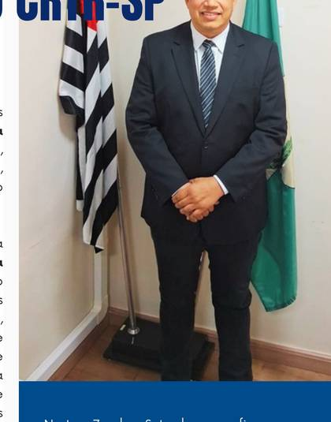

É com grande satisfação que apresentamos a primeira edição da revista Além da Imagem, criada para aproximar profissionais, estudantes e a sociedade das iniciativas, desafios e avanços da Radiologia em nosso Estado.
Esta revista representa o compromisso desta gestão com a transparência, o diálogo e a responsabilidade institucional. Ao assumirmos o Conselho Regional de Técnicos em Radiologia de São Paulo (CRTR-SP), encontramos situações acumuladas que demandam atenção, organização e esclarecimento. Temos trabalhado para compreender cada situação, corrigir o que for necessário e apresentar respostas claras à categoria, sem ocultar dificuldades, mas também sem transformar questões institucionais em disputas pessoais. O que deve prevalecer é o interesse coletivo e o fortalecimento da nossa instituição.
Vivemos um período de profundas transformações. A Inteligência Artificial (IA), as novas tecnologias e as mudanças no mercado de trabalho estão redefinindo práticas e criando novos desafios. Precisamos acompanhar essa evolução garantindo que a inovação caminhe lado a lado com o conhecimento técnico, a ética e a segurança.

Neste 7 de Setembro, reafirmamos a importância de cada profissional na construção de uma Radiologia mais forte. Nosso trabalho vai muito além da produção de imagens: envolve conhecimento, precisão, ética e uma responsabilidade essencial para a saúde e para a vida das pessoas.
Que esta edição seja o início de um diálogo permanente com toda a categoria. Seguiremos trabalhando para esclarecer, informar e construir, com responsabilidade, transparência e respeito aos profissionais que representamos.
Boa leitura!